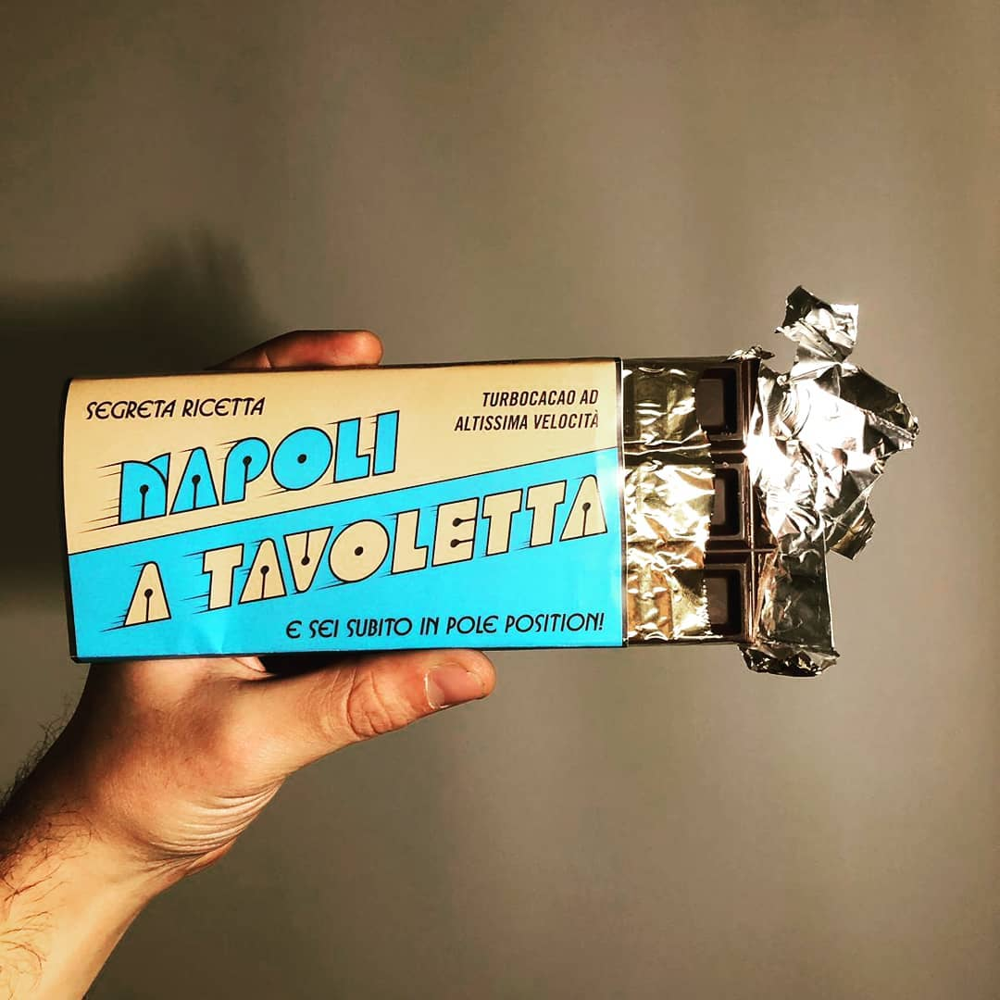

Documentation of the Project
> Brustalist Style >> Design Philosophy
The feMMMMag website adheres to the raw simplicity and utilitarian aesthetics characteristic of brutalist design. Stripping away unnecessary embellishments, the design prioritizes functionality, creating a straightforward and unapologetic user interface.
The Brutalist Website rejects unnecessary embellishments and decorative elements, embracing a raw simplicity that prioritizes functionality over ornamentation. The design philosophy is characterized by straightforward and unapologetic visuals, allowing the content to shine without distraction.
In the spirit of brutalism, the website adopts unconventional and asymmetric structures. The layout is intentionally irregular, featuring stark juxtapositions and a lack of traditional grid systems. This unorthodox approach challenges conventional web design norms, delivering a unique and memorable user experience.
Embracing the brutalist ethos, the website adopts unconventional and asymmetric structures. The layout challenges traditional grid systems, creating an unorthodox yet engaging visual experience.
> Brustalist Style >> Color Palette
The color palette of feMMMMag is dominated by monochromatic tones, featuring shades of grays, whites, and blacks. This stark contrast enhances the raw and industrial aesthetic, providing a clean canvas for content presentation.
Sparse and strategic use of accent colors, such as bold reds, punctuates the monochromatic palette. These accents draw attention to specific elements, guiding users through the content while maintaining the overall simplicity of the design.
> Brustalist Style >> Content Centric Layout
Content takes center stage on feMMMMag, with minimal distractions. The website embodies the brutalist principle that form should follow function, placing emphasis on delivering information without unnecessary visual clutter.
> Brustalist Style >> Typography
The color palette is intentionally minimalistic, relying on high-contrast combinations:
Background: #141414 (Black) | Highlights: Red (#FF0000), White (#FFFFFF) | Text: Whitesmoke (#F5F5F5) | Yellow (#FFFF00)
> Napoli Segreta Funk Style >> Design Philosophy
The feMMMMag website adopts a distinctive style characterized by warm tones, rounded elements, and a fusion of eclectic fonts. This unique design choice is aimed at creating a visually appealing and memorable user experience.
"Napoli Segreta Vol. 1" is not merely a musical compilation; it is a carefully curated journey into the hidden gems of Neapolitan disco and funk, presented with a keen eye for design and aesthetics. The intentional choices in artwork, typography, and special edition offerings come together to create an immersive experience that transports the audience to the vibrant and pulsating era of Naples' musical history.
The typographic elements of "Napoli Segreta" are a careful selection that contributes to the overall retro aesthetic. The primary typeface, Domino, was originally designed by the Demarchi siblings and was a winner in a Mecanorma typeface design contest in 1972. This choice anchors the design in the authenticity of the era, connecting the visual identity directly to the 1970s design landscape. The subtitle, using outlined Blippo from 1969, adds a touch of boldness and character to the overall typographic composition. Blippo, a sturdier typeface from the same genre, complements Domino and enhances the visual impact of the album's title. To complete the typographic ensemble, the use of Busorama from 1970 in the limited edition soft drink promotion adds a playful and dynamic element to the project. This varied selection of typefaces not only pays homage to the diversity of the design landscape of the 70s and 80s but also reflects the rich and multifaceted nature of the Neapolitan disco and funk scene.
> Neapolitan Funk >> Color Palette
The color palette is centered around earthy and warm tones to evoke a sense of comfort and creativity. The primary colors include:
Background: #e7b77a (Light Brown) | Highlights: Yellow (#FFEB3B), Orangered (#FF4500) | Text: #039ad7 (Deep Sky Blue), #a5b9aa (Sage Green)
> Neapolitan Funk >> Typography
The website embraces a mix of fonts to achieve a playful and dynamic typographic style:
Main Heading Font: mairy_black_oblicuaregular | Secondary Heading Font: funk_gibson_demooutline | Body Text Font: mairy_bookregular
> Neapolitan Funk >> Layout
The layout features rounded corners and a border-radius of 27px, contributing to a soft and inviting appearance. This choice aims to create a harmonious and friendly browsing experience.